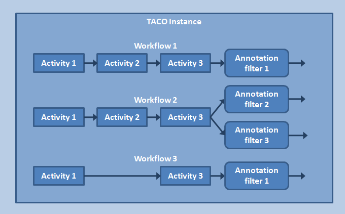
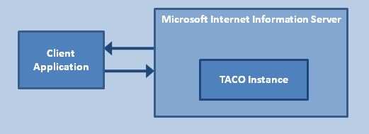

The Elsevier Fingerprint Engine is a text processing framework, providing the infrastructure and functionality to analyze and annotate text. In principle the Fingerprint Engine framework does not limit the type of analysis that can be performed - it only provides the infrastructure for doing that. To this end, its structure is very generic, allowing for various types of text processing. A configured instance consists of a number of elements:
These elements will be described in more detail below. Configuration of a Fingerprint Engine instance is a matter of defining one or more workflows for this instance. Once this is done and the instance is running, client applications can call the Fingerprint Engine to apply a certain workflow to an input text. The result will be an annotated text in XML format as defined by the annotations in the corresponding workflow.
Activities are text processing steps performing one particular task. An activity is, e.g., sentence boundary detection breaking up a text into separate sentences. A series of different activities then forms a more complex text processing task. For instance, combining the activities language detection, sentence boundary detection, and normalization. The order is important, since it is likely that certain activities need as input the output of other activities. An example is part of speech tagging, which needs the output of a tokenizer. Configuration of an activity also defines a tag for the output (annotation) of the activity. There is a chapter on currently available activities.
Annotations are the output of activities. An activity may need as input one or more annotations, and can produce multiple annotations. Annotations are classified in various annotation types. Since workflows involve normally multiple activities, a workflow could produce a large amount of annotations. In workflow configurations one can define annotation filters that specify which annotations must be produced as output of the entire workflow. Other annotations are then suppressed.
There are several kinds of annotation filters, e.g., whitelist annotation filters that list the items to be included in the output and blacklist annotation filters that define items to be excluded in the output. Typically activities require annotations of other type of activities, e.g., the part of speech tagger activity needs a tokenizer annotation. This dependence is specified in the workflow configuration by referring in an activity to the to be used activity annotation tag.
Workflows define which activities should be performed and in what order. Their configuration also involves defining one or more annotation filters to define which activity output should be produced as workflow output. Essentially workflows can be regarded as definitions of complex activities.
Static objects are datasets or functions that are available to be used for any activity. Examples of static objects are term list (either as a text file or as a table in a database), a thesaurus, a tokenizer, etc. Certain activities require the presence of static objects of a specific type. The dehyphenation activity, for instance, uses a list of terms to decide whether or not to dehyphenate. Its configuration therefore needs to specify a static object that provides such a term list. Note that static object types are hierarchical, meaning that certain object types inherently also implement other types. The chapter on static objects discusses the currently available static objects in detail.
The infrastructure that the Fingerprint Engine provides consists of a number of elements:
A .Net platform containing a data structure and toolkit to process a text and its analysis;
A collection of activities for a number of analytical tasks for several languages;
- A host process
- for initializing and running Windows Workflow Foundation workflows defining text analysis functionality;
- for keeping large and complex data objects for re-use in textual analysis, such as thesauri, dictionaries and normalization tables;
- A server process that receives text analysis requests, dispatches analysis workflows and communicates the results to the client.
The host process is installed as a web application in Microsoft Internet Information Server (IIS). A typical client application communicates with IIS which in turn dispatches the request to the Fingerprint Engine. The result, annotated text, is returned to the application via IIS. This process is depicted in the figure below.
Preprocessors are not so much a functional part of the Elsevier Fingerprint Engine: rather, preprocessors filter or adapt the input in order to deliver the correct input to the Fingerprint Engine, that is: text. Preprocessors are separate modules that convert and or format a text to make it suitable to submit to the Fingerprint Engine. For instance, a preprocessor could take an HTML document, extract the text to be processed, and add a section annotation to indicate the title, body etc. The Tokenize activity for instance, can accept a section annotation and process it.